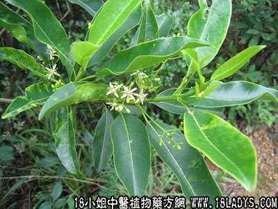

山桔(中药材植物名:降真香)(植物科目:芸香科)

别名：降真香、酒饼叶。
植物名：降真香。
生长环境：本品为灌木或小乔木。生于山地小树林中，次生林中。
分布：我国南部各地，广州郊区常见。此外亚洲热带地区各地亦有。
入药部分：根。
采集期：全年。
自采地点：山岗。
性味：性平、味甘、气香。
功能：化气、止咳、止痛。
主治、用量和用法：1、胃气痛：干根1～2两，猪瘦肉适量，清水适量；2、风热咳：干根1～1两半，清水煎服；3、小肠疝气：干根1～2两，清水煎服。
附录：（叶）1、治风热咳：将山桔叶适量，塞入猪粉肠内煲食。2、治冻疮（生萝卜仔）：将叶适量，煎水浸洗患处。
（方歌）性味甘平山桔根，能疗胃痛热咳频，更治小肠疝气痛，煎汤频服见功真，叶入猪肠同煎服，止咳功能亦可珍，天寒手足生萝卜，捣汁涂敷消肿疼。